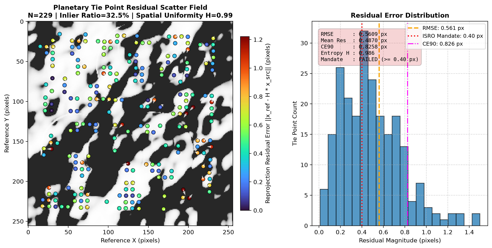
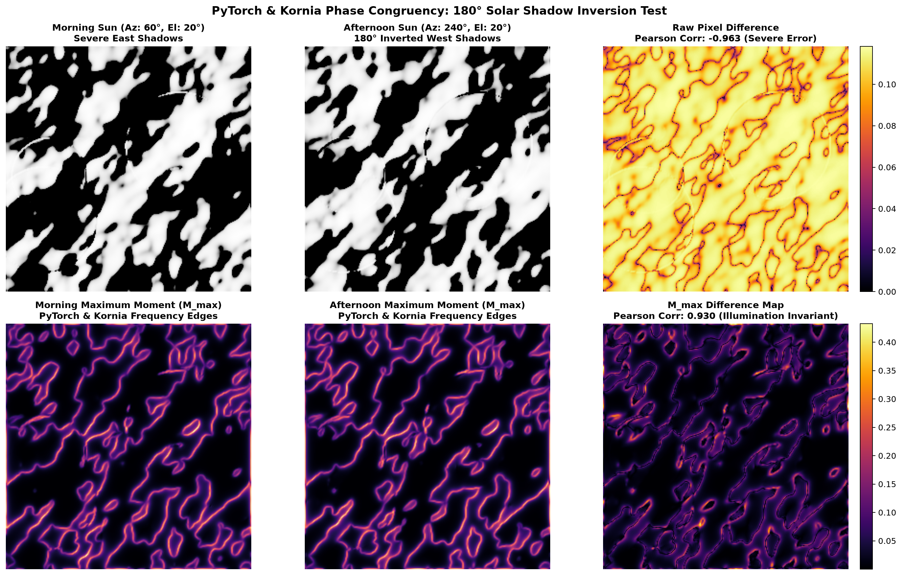

On the Moon, craters cast razor-sharp pitch-black shadows that reverse completely between morning and afternoon orbits, breaking classical computer vision (SIFT/ORB). Samanvaya uses Zero-DC Log-Gabor Phase Congruency and LoFTR Transformers to detect invariant physical step edges, achieving sub-pixel precision (< 0.40 px RMSE) across a 20× GSD scale ratio.
Drag the solar azimuth slider below to orbit the simulated Sun around a lunar crater. Watch how raw light and shadow flip completely, while Samanvaya's Log-Gabor Phase Congruency extracts the invariant physical crater rim without changing!
Drag the slider horizontally to compare the Morning Reference Frame (Left) with the Registered Afternoon Frame (Right).


Query geospatial telemetry in natural language or search the vectorized photogrammetry database instantly.
Ask questions about your data in natural language
Search 10B+ geospatial records via embeddings
Enter a semantic query to search the vectorized photogrammetry database.
Built with rigorous mathematical algorithms, enterprise cybersecurity, distributed networking, and planetary astrophysics.
Ready for production, cloud servers, or local workstation development.